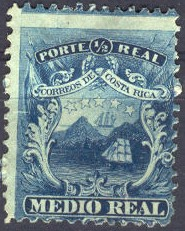
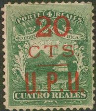
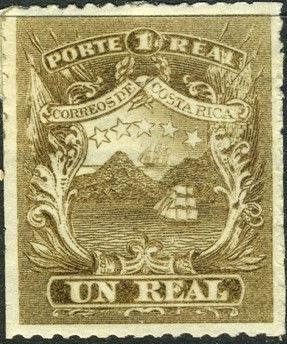
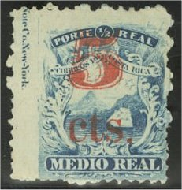
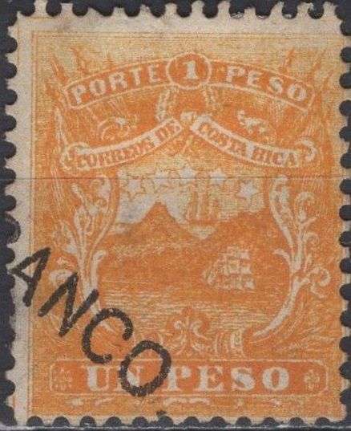
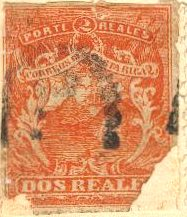
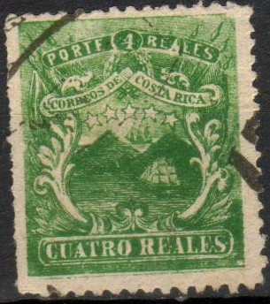
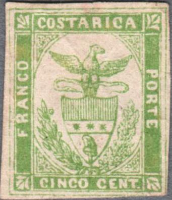

Return To Catalogue - Costa Rica 1883-1920 - Costa Rica miscellaneous
Note: on my website many of the
pictures can not be seen! They are of course present in the
catalogue;
contact me if you want to purchase it.
More information about Costa Rica stamps can be found at: http://www.socorico.org/crindex3.html



1/2 r blue 2 r red 4 r green 1 P orange
These stamps have perforation 12. Genuine used stamps are quite rare. Most of the 'used' stamps are bear forged cancels.
Value of the stamps |
|||
vc = very common c = common * = not so common ** = uncommon |
*** = very uncommon R = rare RR = very rare RRR = extremely rare |
||
| Value | Unused | Used | Remarks |
| 1/2 r | c | * | |
| 1 r | c | * | |
| 4 r | * | ** | |
| 1 P | ** | *** | |
Overprinted 'OFICIAL'

Reduced size
These stamps with overprint "OFICIAL" are bogus altogether, but created by James J. Ross (see below). These 'essays' have also been forged (in 'The Fournier album of philatelic forgeries' a forged "OFICIAL" overprint can be found).
Surcharged



'1 cto' (red) on 1/2 r blue '2 cts.' (red) on 1/2 r blue '5 cts. U.P.U' (red) on 1/2 r blue '10 CTS. U.P.U' on 2 r red '20 CTS. U.P.U' (red) on 4 r green
Value of the stamps |
|||
vc = very common c = common * = not so common ** = uncommon |
*** = very uncommon R = rare RR = very rare RRR = extremely rare |
||
| Value | Unused | Used | Remarks |
| 1 cto on 1/2 r | * | * | two types; 'cto' straight or in italic |
| 2 cto on 1/2 r | * | * | |
| 5 cto on 1/2 r | * | ** | |
| 10 cto on 2 r | *** | *** | |
| 20 cto on 4 r | *** | *** | |

A mystery 1 r brown stamp, essay?
Numeral cancel of Punta-Arenas: diamond with '1' surrounded by an
ellipse constisting of horizontal lines.
Boxed date cancels.
Townname in an ellipse. I've also seen "ATENAS",
"CARTAGO", "GRECIA", "SAN JOSE" and
"SRAMON".

"ALAJUELA COSTA RICA" and star cancel.
Fournier has made forged overprints (all the above) on genuine stamps, images can be found in 'The Fournier album of philatelic forgeries').
Forged Fournier overprints, taken from 'A Fournier Album of
Philatelic Forgeries', reduced sizes
Other overprints exist, but were made for stamp collectors on leftover stamps after the stamps had become invalid for use. If my information is correct, a certain James J.Ross from New York bought about 3 million remainders in 1883 consisting of all four values. Since among those remainders, there were only 14,000 with overprints (which were more in demand than the 'normal' stamps), he requested and got permission from the minister of finance to let the government printer make new sets of overprints (which were of course never valid for use). Examples:



Forged overprint '5 CTS U.P.U.' on 1/2 r, the '5' is different
from the genuine surcharge.

A different type of overprint of the "20 CTS U.P.U." on
4 r, forged overprint?
Other forgeries are rather primitive lithographed forgeries of the whole stamp (the genuine stamps are engraved):
First forgery (Spiro):
Probably Spiro forgeries, note the typical 'Spiro' cancel.

Possibly a Spiro forgery as well but with a "FRANCO."
cancel. This cancel exists on many forgeries of other countries,
such as Antigua, Bolivia, British Guiana, Cuba, Egypt, Hong kong,
Sierra Leone and Suez. Also some other cancels that appear on
forgeries of other countries, such as the "909" cancel.





In the above forgeries, the central star has six points (genuine stamps have stars with five points). The central star therefore has a ray going straight down.

Some other forgeries of the 1/2 r value and 1 P value, presumably
made by the same forger
I've only seen these forgeries with the above shown 'Sicily' cancel or a pattern of parallel lines (as in the 1/2 r and 1 P values shown above). The "UN PESO" value does not have ornaments in front or behind "UN PESO" as it should have. I believe this is the Second Forgery described in Album Weeds. A stamp with inscription "UN PESEDA" instead of "UN PESO" is a forgery of this type although I have never seen it (third forgery of Album Weeds).



(Some other primitive forgeries, note that the '4' in the 4 r is
slanting towards the right)
In the above forgeries, the most right star almost touches the mountain below it. In the genuine stamps, this star is placed quite far from this mountain. The cancels on these stamps consist of patterns of bars or ellipses. The ornaments below the value inscription are missing. I believe this must be the First Forgery described in Album Weeds. I've even seen a misprint of the above 4 r stamp, in which the "4" is replaced by a "1/2" (but the text is still "QUATRO REALES" and the color of the stamp is green).


Other forgeries (first one being the 2 r value of the third
forgery?). Note the concentric numeral cancel on the other two
forgeries.

A bogus issue for Costa Rica with arms with an eagle (5 c green).
This bogus stamp was already listed in Moens Les Timbres Poste
Illustrees of 1864 on plate 52 (although the illustration there
is slightly different) in the values 2 c lilac and 5 c green.
For stamps of Costa Rica issued from 1883 to 1920, click here.
{kind=link}
{kind=link}
{kind=link}
{kind=link}